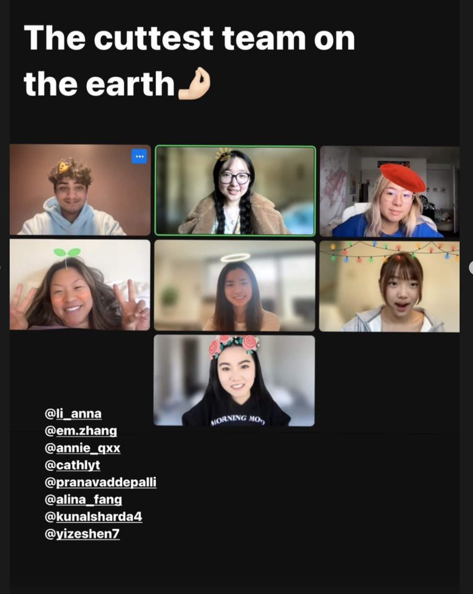
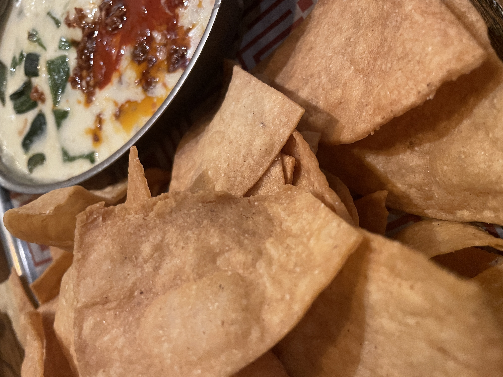

Ongoing Journey - April 2023
Working at tepper, shift of workstyle
 they are playing frisbee ...I think?
they are playing frisbee ...I think?
Started working more at the tepper building, one for the nice air conditioning across the building, two for the football field I get to see while working.
12-1pm it’s the lacrosse practice, 1-2pm the baseball players comes in, and 2-3pm there is usually regular PE, and if you stay long enough there are sometimes students playing fribee after school as well :).
It felt nice studying while facing the foot ball court. Whenever I get stuck, would simply take a pause and look out at the kids playing in the field, practicing for their games. Reminded of grandpa who would often take me to the park when I was little, sitting at the bench talking with his friends, while watching me running around the playground like a tiny madman lol.
It’s a shift of workstyle for sure, about a year ago I often perferred sitting in an underground library, focusing only on the work in front. I was more productive back then for sure, but I am unsure which one is better. It feels pleasent having the option to sense the energy from the court, noticing something more than just yourself and the computer.
My grandpa was never really a spectator at heart, in heated moments he would often join the battle and run around with me at the park, quite fitting to someone his character lol.
Being a leader, credit and responsibilities.
ditto the messageP@CMU started board recruitment for the coming year, where I got to take the lead. Having experience from TAing and involvement with UXA, was able to built up the process with rather ease.
What ended up happening was, only one person out of eight followed the protocol without touble, there were so many follow ups that I got to write a protocol for the protocol, clearifying all the misalignments.
Previous assumption of being a leader consisted of the ability to stay organized and delegate tasks, thinking now, being a leader really is what’s afterward, this ability to empathize and ensure everyone aligned on the same goal.
Something that I look up to Bill, as the president of UXA Bill’s priority has always being setting others for success, taking no credit and all the blames. The time where I missed the outreach for professor for our professor chat event, remember the first thing he said was ‘apologize…as we failed to motivate and facilite you’.
Putting down the desire to showoff, stay responsible to set others for success, a pretty valuable lessoned learned.
Bill, Ant, relationships
tocaya nachos, they have really good chips and drinks, would recommend :)Went to a bar with Anthony and Bill before the semester ended, ordered a few drinks and talked about summer plans, life, and relationships.
Bill is a firm believer that relationship is something he would only look after he settles a bit more. It’s like, the center piece of the jigsaw puzzle, no mean to push the centerpiece so soon, knowing that everyone will be different comes to the time of graduation.
Anthony in the meanwhile, is somewhat engaged in a relationship. For him it’s nice to spend time together with someone, sharing differnt parts of life and growing together.
Both of them are right as it matters more of what you want, does got me think a bit more. After the failed confession, have being putting more focus on myself. Still organizing my thought though, I do believe that through every interaction I get a clearer understanding of myself, and that along should be an asset, not a cost.
Didn’t order a drink so it really was only the two guys talking lol, surprised how much alcohol does to someone.
Gap semester, cross road, choices in life
 the CMU sign for seniors to take photos with, previously thought they were AR objects lol
the CMU sign for seniors to take photos with, previously thought they were AR objects lol
With some back and forth decied to take a gap semester in F23. When clicking sent email on my leave of absense email, can sense mixed feeling arose in my heart.
Part of me are excited about this new oppotunities, this chance to be more unique among people I know; at the same time, this slight fear of being alone in a new enviorment, doing everything on my own.
It’s intersting to think I like to have choices, but like less on commiting to one. While deciding my F23 semester felt like I was sitting at the middle of an intersection, waiting, hoping that the different path would merge into one.
More so of a discovery than anything else, have learned to give imagination and reality their own space, keeping their independence. Mom said that not all things need to have a meaning, just sitting there and observe in itself is valuable.